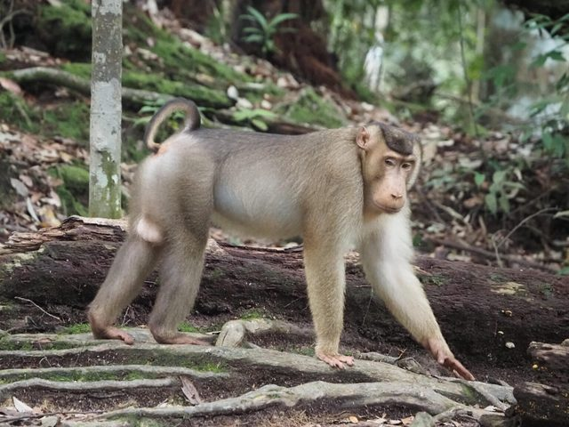

About us
Trek deeper, connect wilder, leave inspired.

At the heart of Gunung Leuser National Park, in the Bukit Lawang area, lies a remarkable tropical landscape home to a rich variety of rare wildlife.
One of the area's greatest draws is the Sumatran orangutan, living freely in its natural habitat. Watching orangutans move through the canopy is a moment that inspires awe and a renewed sense of why nature must be protected. Beyond orangutans, the forest shelters siamangs, long-tailed macaques, exotic birds, and rare flora found only in Indonesia's tropical rainforests.

Bukit Lawang offers a range of nature-based activities — from forest trekking and river tubing to camping and wildlife conservation education. These experiences give visitors a genuine sense of adventure while providing a vital source of income for the local community.
Local residents work as tour guides, forest rangers, lodge managers, and small-business owners, all contributing to environmental conservation and the protection of wildlife.

Experience Sumatra With Purpose
Trek through Sumatra's tropical rainforest and discover dramatic landscapes, waterfalls, and hidden trails.
Observe orangutans in their natural habitat and learn about their behaviour, the challenges they face, and the efforts underway to protect them.
Experience traditional rafting on crystal-clear rivers surrounded by pristine jungle — adventure guided by local knowledge.
Take part in real conservation work — tree planting, habitat restoration, and support for local communities.
A percentage of proceeds from every trek is donated to tree-planting and conservation, to support orphaned children, and to create employment opportunities for the local community.
Get in touch
Whether you are planning dates, checking availability, or putting together a custom itinerary, we are happy to help. There is no pressure — just a conversation.
WhatsApp / Phone